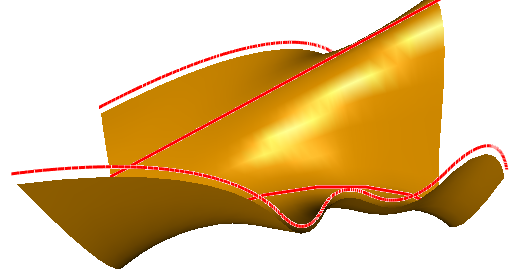

Spline surface from clips.
Let's create a smooth surface from three clips - two splines, a line segment and an arc.
This code creates the clips:
SG_POINT tmpPnt;
SG_SPLINE* spl1 = SG_SPLINE::Create();
tmpPnt.x = 98.0; tmpPnt.y = 0.0; tmpPnt.z = -13.0;
spl1->AddKnot(tmpPnt,0);
tmpPnt.x = 85.0; tmpPnt.y = 0.0; tmpPnt.z = 19.0;
spl1->AddKnot(tmpPnt,1);
tmpPnt.x = 43.0; tmpPnt.y = 0.0; tmpPnt.z = -31.0;
spl1->AddKnot(tmpPnt,2);
tmpPnt.x = 5.0; tmpPnt.y = 0.0; tmpPnt.z = -3.0;
spl1->AddKnot(tmpPnt,3);
tmpPnt.x = -11.0; tmpPnt.y = 0.0; tmpPnt.z = -39.0;
spl1->AddKnot(tmpPnt,4);
tmpPnt.x =-48.0; tmpPnt.y = 0.0; tmpPnt.z = 23.0;
spl1->AddKnot(tmpPnt,5);
tmpPnt.x =-125.0; tmpPnt.y = 0.0; tmpPnt.z = 23.0;
spl1->AddKnot(tmpPnt,6);
sgCSpline* spl1_obj = sgCreateSpline(*spl1);
SG_SPLINE::Delete(spl1);
sgGetScene()->AttachObject(spl1_obj);
spl1_obj->SetAttribute(SG_OA_COLOR,12);
spl1_obj->SetAttribute(SG_OA_LINE_THICKNESS, 2);
SG_SPLINE* spl2 = SG_SPLINE::Create();
tmpPnt.x = 96.0; tmpPnt.y = 150.0; tmpPnt.z = 8.0;
spl2->AddKnot(tmpPnt,0);
tmpPnt.x = 66.0; tmpPnt.y = 150.0; tmpPnt.z = -20.0;
spl2->AddKnot(tmpPnt,1);
tmpPnt.x = 12.0; tmpPnt.y = 150.0; tmpPnt.z = 37.0;
spl2->AddKnot(tmpPnt,2);
tmpPnt.x = -128.0; tmpPnt.y = 150.0; tmpPnt.z = -23.0;
spl2->AddKnot(tmpPnt,3);
sgCSpline* spl2_obj = sgCreateSpline(*spl2);
SG_SPLINE::Delete(spl2);
sgGetScene()->AttachObject(spl2_obj);
spl2_obj->SetAttribute(SG_OA_COLOR,12);
spl2_obj->SetAttribute(SG_OA_LINE_THICKNESS, 2);
sgCLine* ln_obj = sgCreateLine(100.0,100.0,50.0, -121.0,100.0,-50.0);
sgGetScene()->AttachObject(ln_obj);
ln_obj->SetAttribute(SG_OA_COLOR,12);
ln_obj->SetAttribute(SG_OA_LINE_THICKNESS, 2);
SG_ARC arcG;
SG_POINT arcBeg = {98.0, 50.0 , -80.0};
SG_POINT arcEnd = {-117.0, 50.0 , -80.0};
SG_POINT arcMid = {-55.0, 50.0 , -50.0};
arcG.FromTreePoints(arcBeg,arcEnd,arcMid,false);
sgCArc* arc_obj = sgCreateArc(arcG);
sgGetScene()->AttachObject(arc_obj);
arc_obj->SetAttribute(SG_OA_COLOR,12);
arc_obj->SetAttribute(SG_OA_LINE_THICKNESS, 2);
Let's create the surface itself from these clips. As the clips are unclosed only contour orientations will be considered when constructing the surface - the contours had the same orientation by its construction. Let's specify the zero array as the array of parameters:
sgC2DObject* objcts[4];
objcts[0] = spl1_obj;
objcts[1] = arc_obj;
objcts[2] = ln_obj;
objcts[3] = spl2_obj;
double param[4];
param[0] = param[1] = param[2] = param[3] = 0.0;
sgCObject* surf = sgSurfaces::SplineSurfaceFromSections((const sgC2DObject**)(objcts),
param,4,false);
sgGetScene()->AttachObject(surf);
surf->SetAttribute(SG_OA_COLOR,24);
Then let's move the obtained surface:
SG_VECTOR transV1 = {0,0,-5};
surf->InitTempMatrix()->Translate(transV1);
surf->ApplyTempMatrix();
surf->DestroyTempMatrix();
See also:
sgSurcfaces::SplineSurfaceFromSections
sgGetScene sgCScene::AttachObject sgCObject::SetAttribute
Illustration:
